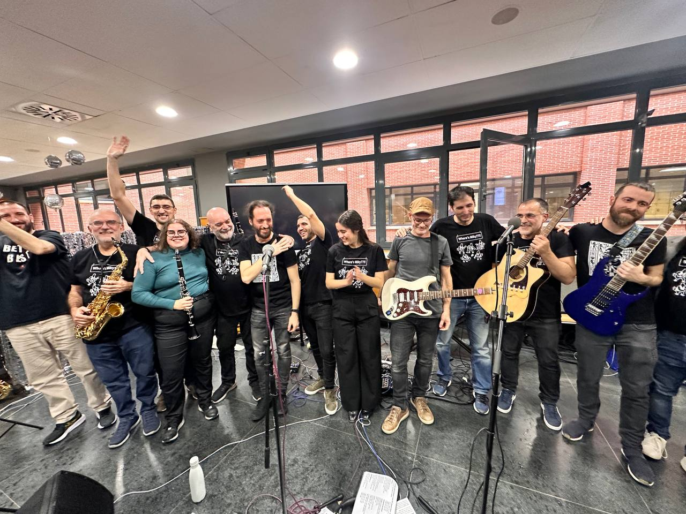
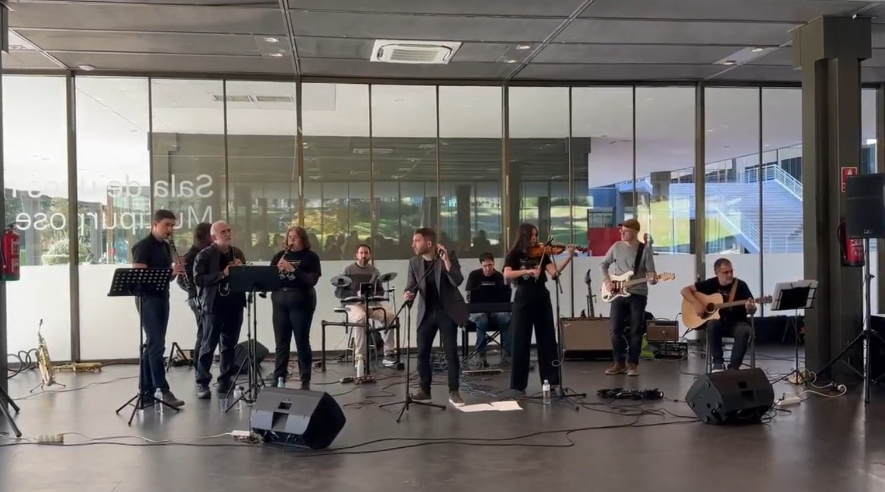
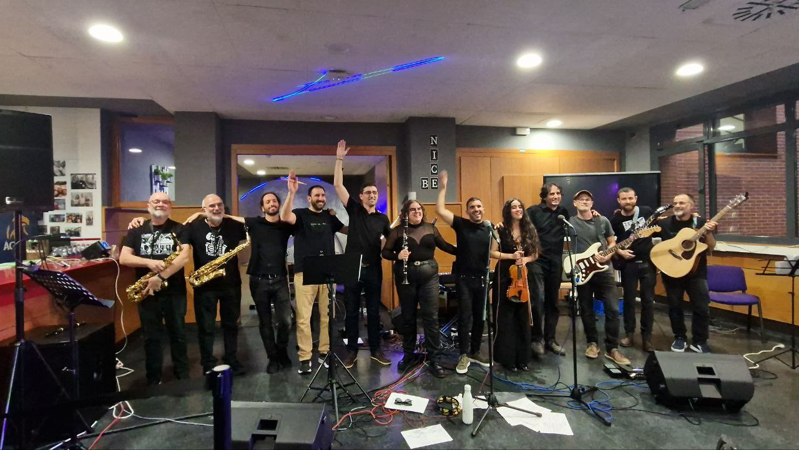
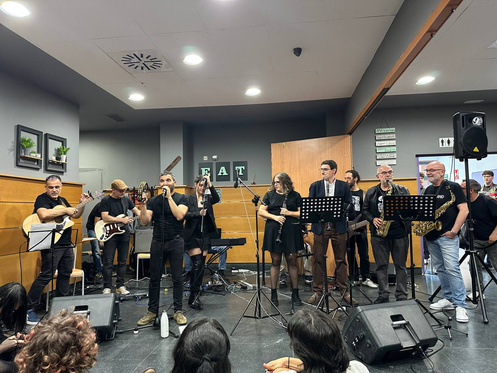
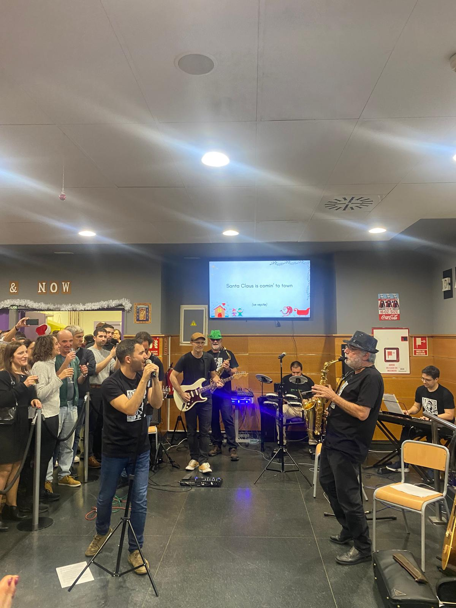

8
MAY
2026
Concierto fin de curso
📍Terraza de la Facultad de Informática, UCM
📍Terraza de la Facultad de Informática, UCM

📍 Cafetería de la Facultad de Informática, UCM

📍 Museo del Traje, UCM

📍 Cafetería de la Facultad de Informática, UCM

📍 Cafetería de la Facultad de Informática, UCM

📍 Cafetería de la Facultad de Informática, UCM

¿Quieres contratarnos, colaborar o simplemente decir algo? Escríbenos.